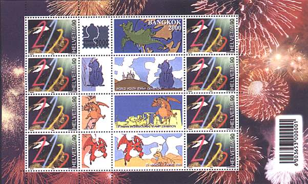

The Bright and the Dark Side of Personalized Issues |
This kind of issues were firstly introduced by the Australian postal administration; they were quickly followed by the postal administrations of Switzerland, Ireland, United Kingdom and, in a special version, by that of Canada.
Being attached to real stamps, this kind of issues not only have a certain philatelic significance, but also in a certain way represent the issuing countries, a reason why the postal administrations have specified from the beginning some rules and also limitations concerning the images that can be submitted for the printing on these issues.
It seems that the public at large and even some stamp collectors have enjoyed this new kind of "artistic" expression. Many stamp collectors, judging upon their reactions in philatelic magazines and on philatelic newsgroups, are rather sceptical in what concerns the philatelic value of these labels.
The publicity of one of most active Swiss stamp dealer has drawn my attention on another, somehow less pleasant aspect of the personalized issues. Please look below for dealer's publicity (in black, translated from German) and for some comments.
Millennium's Sheetlet Sensation
Eight
different images on one sheetlet. Normally only two different images are
possible. This rare sheetlet appeared for the Bangkok 2000.
This issue was
ordered by the official representative of the Swiss postal administration.
A very limited edition! (Sehr kleine Auflage!)

| Sheetlet mint ** | Fr. 69.50 |
| Sheetlet with the special cancellation from the exhibition | Fr. 79.00 |
| Series on 4 covers, special cancellation | Fr. 89.00 |
In my opinion there are several problems with this offer:
-
If a rank and file stamp collector can order only sheetlets with two different images, repeated four times on each sheetlet, then how can appear sheetlets that depart from this rule (see above)?
-
Is this an official or a private issue? Probably it should be considered as an official one, because, as stated by the dealer, it was ordered by an official representative of the postal administration.
-
If so, why is the edition "very limited"?
-
Taking in consideration that the basic price of one sheet of under Fr. 15 and the postal value of Fr. 7.20, are the asked prices so high because the edition was so limited? Or was it so limited in order to justify the high prices asked for this material? (At time the exchange rate is about US$ 1.00 = Fr. 1.70).
Just notice that:
-
The philatelic code of ethics for the use of UPU members countries specifies in the article 4: For each issue of postage stamps, administrations shall ensure that these are printed in sufficient quantity to meet potential operational requirements and foreseeable philatelic needs. In employing cancellation dies, hand-stamps and cachets for special occasions or events, administrations shall ensure that a sufficient quantity of philatelic products is available to meet requirements.
-
The publicity comes from the same dealer who offered many imperforated postal stamps of Switzerland and Liechtenstein, stamps that can exist in certain quantities only when some officials circumvent the rules (click here to read the article about imperforates).
Do you like this article? Or on the contrary do you have serious objections? Make use of PASIC Forum to express your opinion.
|
|
||